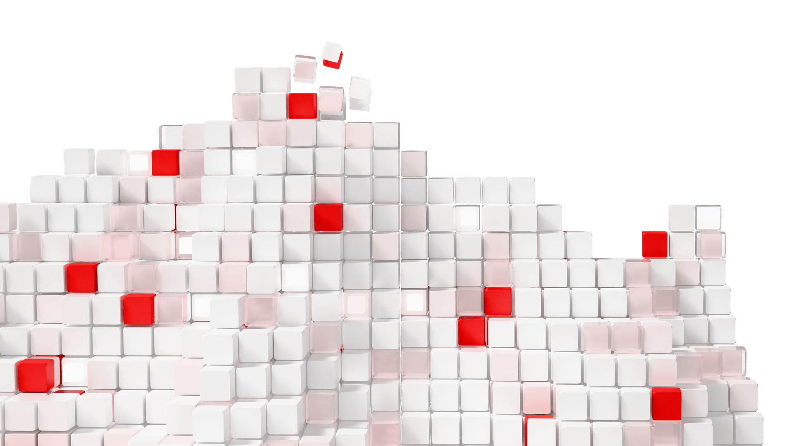
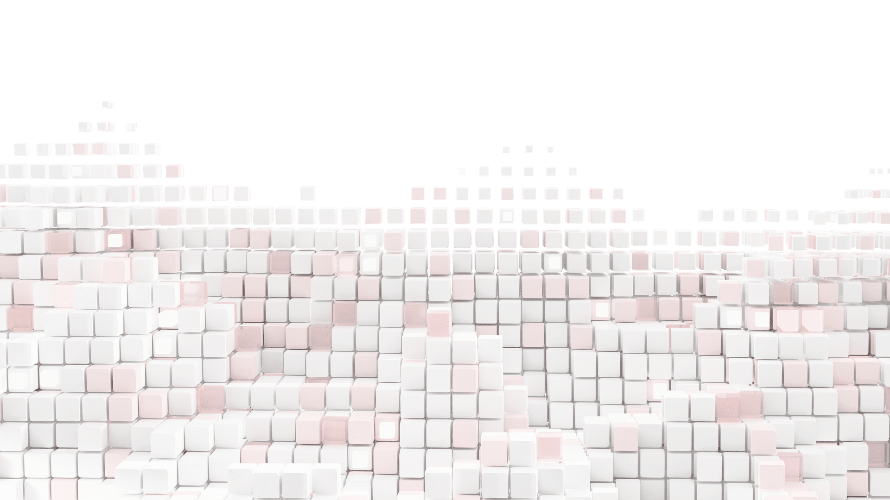
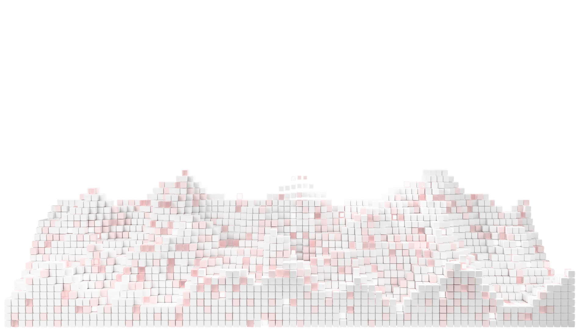
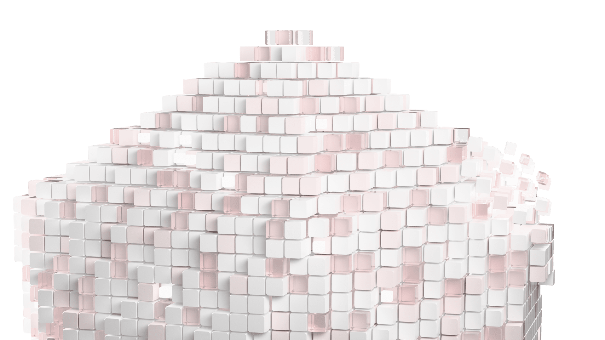

Models you own. Costs you control.
More users. More agents. More tokens.
Costs climb unpredictably as usage scales.
GPUs idle in one cluster, exhausted in another.
Their models. Their prices. Their rules.

One request. One path. Five layers.
Leading performance. Text, voice, vision.
New models, validated and optimized in days, every month.
3× throughput. 2× faster first token.
Identity. Rate limits. Guardrails.

Where your data lives. Sovereign to edge.
Powering Red Hat's Agentic SDLC.
Most of our traffic now runs open weight.
GPU utilization, from 30% to 80%.

Your models. Your prices. Your rules.